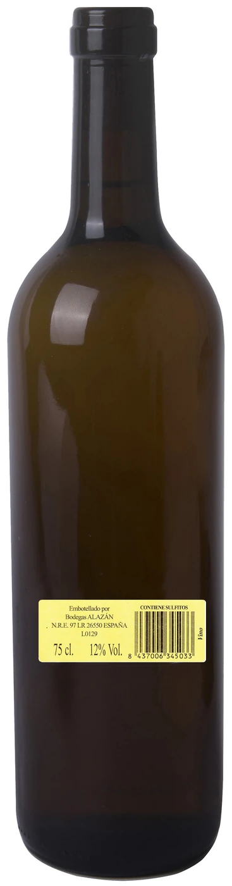
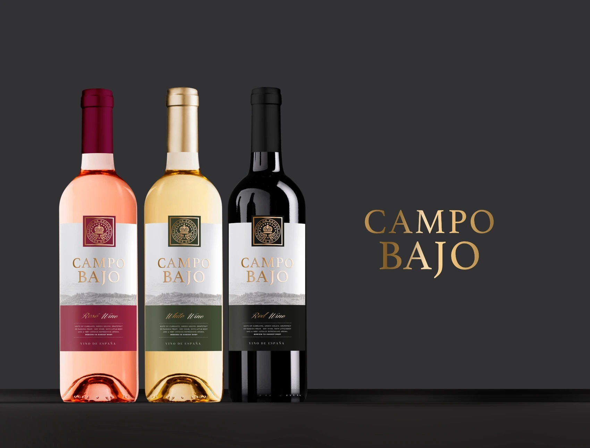
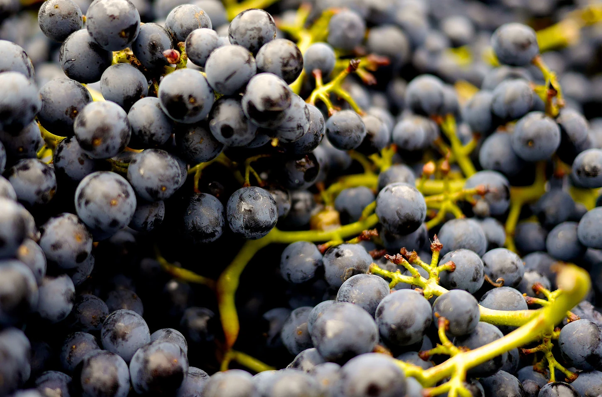
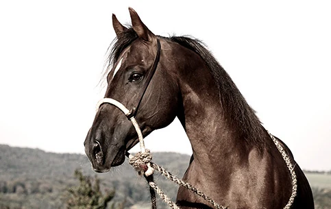
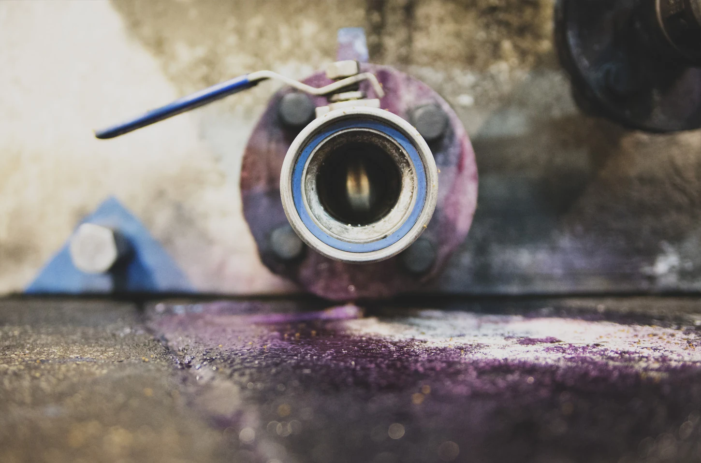
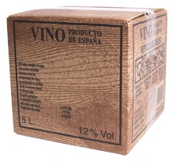
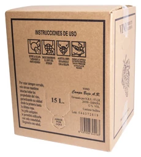
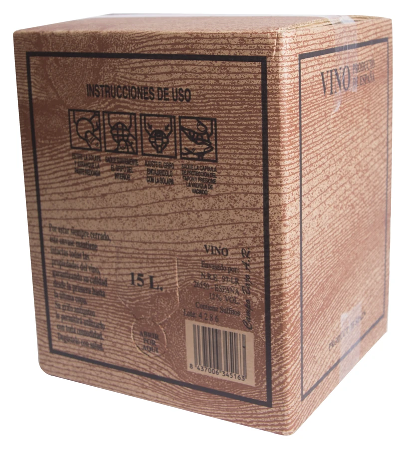
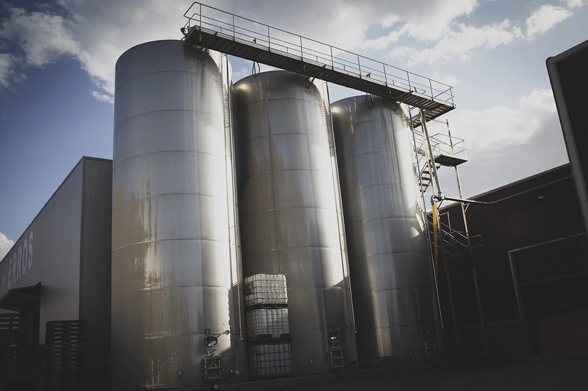

Bodegas Alazán · Rincón de Soto, La Rioja
Vinos con
raíz riojana.
Elaboramos, almacenamos y comercializamos vinos de mesa desde el valle del Ebro. Embotellados, Bag in Box y vino a granel.
La historia de nuestra bodega
2003El comienzo de nuestra historia
Una bodega de Rincón de Soto vinculada a la cultura de la vid y el vino.
Conocer la bodegaNuestra historia
La vid, el vino
y un lugar de origen.


2003
El inicio de Bodegas Alazán
Bodegas Alazán S.L. inicia su andadura en 2003 de la mano de jóvenes con gran arraigo en la cultura de la vid y el vino en el valle del Ebro.
La bodega tiene su sede en Rincón de Soto, en la Comunidad Autónoma de La Rioja, y se dedica a la elaboración, almacenamiento y comercialización de vinos de mesa tipo cosechero, tanto a granel como embotellados.
«Entre las viñas, trota alazán y llena copa, vino rojizo y canela en un brindis, tinto, rosado y blanco».
Rincón de Soto · La Rioja · España
Conocer nuestros vinosNuestras instalaciones
El cuidado del vino,
en cada paso.
Bodegas Alazán cuenta con una capacidad de almacenamiento de 1.500.000 litros en depósitos de acero inoxidable. Elaboración, almacenamiento y embotellado se desarrollan con atención a las cualidades del vino.
1,5 M
Litros de capacidad de almacenamiento
Inox
Depósitos de acero inoxidable
01 / 12

Tecnología al servicio del vino
Las instalaciones disponen de tecnología de tratamiento como la filtración tangencial, que permite la filtración esterilizante en un solo paso sin dejar residuos sólidos.
La elaboración, el almacenamiento, el embotellado y la seguridad del transporte se cuidan para conservar las cualidades del vino.
Venta de vino a granelVinos embotellados
Nuestros vinos.
Bodegas Alazán embotella sus vinos con las marcas Alazán, Campo Bajo y Venta Blancas. Descubre las referencias de Alazán y Campo Bajo.
Para información sobre Venta Blancas, contacta con la bodega.
Alazán
Alazán
Blanco
Vino cosechero de mesa blanco
Notas de cata
Limpieza y brillo en amarillo ámbar. Complejo en aromas que funden flores blancas y frutas con evocaciones de especiados y tostados. Sedoso y seco, con buen final y un retrogusto que invita a volver a probar.
Origen y elaboración
Vino cosechero trabajado desde la base de la bodega en Rincón de Soto, con cuidado en elaboración, almacenamiento y embotellado para conservar su perfil fresco.
Añada, variedades y graduación: consultar con la bodega.
Volver a todos los vinosAlazán
Alazán
Rosado
Vino cosechero de mesa rosado
Notas de cata
Color salmón pálido que evoca delicadeza. Intenso en nariz y exuberante en matices frutales. Seco, lleno de chispa y muy fresco.
Origen y elaboración
Rosado de mesa de perfil vivo, pensado para mantener el carácter del vino cosechero y facilitar un consumo cercano y versátil.
Añada, variedades y graduación: consultar con la bodega.
Volver a todos los vinosAlazán
Alazán
Tinto
Vino cosechero de mesa tinto
Notas de cata
Color rubí muy atractivo. Nariz intensa con cereza, ciruela, mora y arándano. Delicioso en boca, con taninos suaves y seco. Deja recuerdos de frutas rojas, hierbas y especias.
Origen y elaboración
Tinto cosechero elaborado para expresar fruta, suavidad y una boca seca, con conservación cuidada en depósitos de acero inoxidable.
Añada, variedades y graduación: consultar con la bodega.
Volver a todos los vinosAlazán
Alazán
Semi Crianza
Vino cosechero tinto semi crianza
Notas de cata
Color granate teja, aromas tostados y de roble procedentes de la crianza. Delicioso en boca, suave y seco. Sorprende, se recuerda y deja ganas de volverlo a disfrutar.
Origen y elaboración
Perfil de crianza breve orientado a sumar notas de roble y tostado sin perder la suavidad del vino cosechero.
Añada, variedades y graduación: consultar con la bodega.
Volver a todos los vinosCampo Bajo
Campo Bajo
Tinto
Vino de mesa tinto
Notas de cata
Atractivo rubí a la vista, con aromas de cereza, ciruela, moras y arándanos. Intenso en nariz, delicioso en boca, seco y suave en taninos.
Origen y elaboración
Marca embotellada por Bodegas Alazán para ofrecer un tinto de mesa directo, amable y fácil de volver a saborear.
Añada, variedades y graduación: consultar con la bodega.
Volver a todos los vinosCampo Bajo
Campo Bajo
Blanco
Vino de mesa blanco
Notas de cata
Ámbar muy limpio y brillante, con aromas complejos que funden frutas y flores blancas, con matices especiados y tostados. Buen final, sedoso y seco.
Origen y elaboración
Blanco de mesa con enfoque de limpieza, brillo y equilibrio aromático, embotellado dentro de la gama Campo Bajo.
Añada, variedades y graduación: consultar con la bodega.
Volver a todos los vinosCampo Bajo
Campo Bajo
Rosado
Vino de mesa rosado
Notas de cata
Suave tono salmón que evoca delicadeza. Exuberante en aromas frutales, intenso en nariz, seco y alegre por su textura chispeante.
Origen y elaboración
Rosado Campo Bajo pensado para transmitir frescura y facilidad de servicio en una gama de mesa accesible.
Añada, variedades y graduación: consultar con la bodega.
Volver a todos los vinosFormatos de 5 y 15 litros
Bag in Box.
Formatos con bolsa hermética y grifo para servir, pensados para conservar el vino y facilitar su consumo.
05L
Litros
Bolsa hermética. Servicio con grifo.
Bag in Box · 5 L
Kraft
Tinto | Rosado | Blanco
Packaging ideal para un vino cosechero que demuestra que la calidad también puede ser asequible.
Consultar este formato
Bag in Box · 5 L
Madera
Tinto | Rosado | Blanco
Formato cómodo para un gran vino a granel del año, en bolsa hermética con grifo para el servicio.
Consultar este formato15L
Litros
Bolsa hermética. Servicio con grifo.

Bag in Box · 15 L
Kraft
Tinto | Rosado
Formato maxi que multiplica la calidad y asequibilidad de un gran vino cosechero para disfrutar de un caldo excelente.
Consultar este formato
Bag in Box · 15 L
Madera
Tinto | Rosado
Formato atractivo para gran consumo, con bolsa de 15 litros herméticamente cerrada y grifo para servir.
Consultar este formatoVenta a granel
Desde La Rioja,
a otros mercados.

La comercialización de vinos a granel cuenta con un amplio mercado nacional e internacional, especialmente en países del entorno europeo.
Vinos de mesa del año, filtración tangencial y almacenamiento en depósitos de acero inoxidable. Contacta con la bodega para consultar disponibilidad, volúmenes y condiciones comerciales.
Solicitar información comercial01
Vino cosechero
Vinos de mesa del año con una propuesta directa de calidad y precio.
02
Tratamiento y conservación
Filtración tangencial y almacenamiento en depósitos de acero inoxidable.
03
Cuidado en el transporte
Atención a la seguridad logística para conservar las cualidades del vino.
Contacto
Hablemos de vino.
Bodegas Alazán, S.L.
Polígono Industrial Martín Grande,calle 3, parcela R
Rincón de Soto · La Rioja · EspañaCómo llegar
Tu consulta.
Envío web pendiente de activación
El envío directo desde la web aún no está activado. Puedes preparar tu consulta y enviarla desde tu aplicación de correo.
Bodegas Alazán
Información nutricional
Declaración nutricional e ingredientes de nuestros vinos.
1. Declaración nutricional
La declaración nutricional completa de cada vino —valor energético, grasas, hidratos de carbono, azúcares, proteínas y sal por cada 100 ml— y la lista de ingredientes están disponibles a través de la etiqueta electrónica del vino, accesible también desde el código QR de la botella, y en la bodega a quien lo solicite.
2. Vinos con etiqueta electrónica
Estos vinos ya tienen su etiqueta electrónica con la información nutricional completa:
Se irán añadiendo más vinos a medida que dispongan de su etiqueta electrónica.
3. ¿Alguna duda?
Para cualquier duda sobre la información nutricional o los ingredientes de un vino, contacta con la bodega.
Última actualización: noviembre de 2026
Bodegas Alazán
Aviso legal
Condiciones de uso de esta web y datos de su titular.
1. Titular de la web
Esta web pertenece a Bodegas Alazán, S.L., con domicilio en Polígono Industrial Martín Grande, calle 3, parcela R, Rincón de Soto, La Rioja, España.
CIF: B26337212. Correo electrónico: alazan@bodegasalazan.com · Teléfono: +34 941 141 796.
2. Objeto
Esta web ofrece información sobre Bodegas Alazán, sus vinos y sus formatos de venta, y permite enviar consultas comerciales a través del formulario de contacto. El acceso a la web y su uso implican la aceptación de este aviso legal.
3. Mayoría de edad
Esta web está dirigida exclusivamente a personas mayores de 18 años. Para entrar debes confirmar tu fecha de nacimiento. Si no tienes 18 años, no debes usar esta web.
4. Propiedad intelectual
Todos los contenidos de esta web (textos, fotografías, logotipos y las marcas Alazán y Campo Bajo) pertenecen a Bodegas Alazán, S.L. o a sus legítimos titulares y están protegidos por la legislación de propiedad intelectual e industrial. Queda prohibida su reproducción, distribución o transformación sin autorización expresa.
5. Uso de la web
Te comprometes a usar la web de forma lícita y a no dañarla, sobrecargarla ni intentar acceder a zonas no autorizadas. Bodegas Alazán, S.L. puede suspender temporalmente el acceso a la web por tareas de mantenimiento o por causas técnicas.
6. Responsabilidad
La información de esta web se ofrece tal cual y se revisa con regularidad, pero no garantizamos que esté siempre completa, actualizada o libre de errores, ni la disponibilidad ininterrumpida de la web. Los enlaces a webs de terceros, como Google Maps, son responsabilidad de sus titulares.
7. Protección de datos
El tratamiento de tus datos personales se explica en la Política de privacidad.
8. Legislación aplicable
Este aviso legal se rige por la legislación española. Para cualquier controversia, las partes se someten a los Juzgados y Tribunales de Calahorra (La Rioja).
Última actualización: noviembre de 2026.
En caso de discrepancia entre la versión en español y su traducción al inglés, prevalece la versión en español.
Bodegas Alazán
Política de privacidad
Cómo tratamos tus datos personales cuando usas esta web.
1. Responsable del tratamiento
El responsable del tratamiento es Bodegas Alazán, S.L., con domicilio en Polígono Industrial Martín Grande, calle 3, parcela R, Rincón de Soto, La Rioja, España. Puedes contactar con nosotros en alazan@bodegasalazan.com o en el teléfono +34 941 141 796.
2. Datos que recogemos
- Formulario de contacto: nombre, correo electrónico y, si lo indicas, teléfono, además del asunto y el mensaje que nos escribas.
- Datos de navegación: tu navegador envía datos técnicos básicos al cargar la página (por ejemplo, tu dirección IP), necesarios para mostrarte la web.
- Verificación de edad: la fecha de nacimiento que introduces para entrar se comprueba en tu propio navegador. No se almacena ni se envía a ningún servidor.
3. Para qué los usamos
- Responder a tus consultas comerciales y solicitudes de información, como paso previo a una posible relación comercial.
- Cumplir nuestras obligaciones legales.
- No usamos tus datos para enviarte publicidad ni los cedemos a terceros con fines comerciales.
4. Cuánto tiempo los conservamos
Conservamos los datos de tus consultas solo durante el tiempo necesario para atenderlas y durante los plazos que exija la ley. Después, los eliminamos.
5. A quién se comunican
No comunicamos tus datos a terceros, salvo obligación legal.
El formulario de contacto prepara un correo que envías desde tu propio programa de correo. Si en el futuro se activa el envío directo desde la web, actualizaremos esta política con los datos del proveedor.
Al visitar la página de contacto, el mapa de Google Maps puede tratar tu dirección IP conforme a la política de privacidad de Google.
6. Tus derechos
Tienes derecho a acceder a tus datos, rectificarlos, suprimirlos, limitar su tratamiento, pedir su portabilidad y oponerte a él. Para ejercerlos, escríbenos a alazan@bodegasalazan.com. También puedes reclamar ante la Agencia Española de Protección de Datos (AEPD) en www.aepd.es.
7. Seguridad
Aplicamos medidas técnicas y organizativas razonables para proteger tus datos frente a accesos no autorizados, pérdidas o alteraciones.
8. Menores de edad
Esta web es solo para mayores de 18 años. No recogemos datos de menores de forma deliberada; si detectamos que hemos recibido datos de un menor, los eliminaremos.
Última actualización: noviembre de 2026.
En caso de discrepancia entre la versión en español y su traducción al inglés, prevalece la versión en español.
Bodegas Alazán
Política de cookies
Qué cookies y tecnologías similares usa esta web.
1. Qué son las cookies
Las cookies son pequeños archivos que un sitio web guarda en tu navegador para recordar información sobre tu visita. Existen también tecnologías similares, como el almacenamiento local del navegador, que cumplen funciones parecidas sin ser cookies.
2. Cookies propias
Esta web no instala cookies propias.
3. Almacenamiento local
Para que la web recuerde que ya verificaste tu edad y que ya viste la presentación inicial, guarda dos datos en tu propio navegador (almacenamiento local). Estos datos no son cookies, no se envían a ningún servidor y solo se guardan en tu dispositivo. Puedes borrarlos desde la configuración de tu navegador.
4. Cookies de terceros: Google Maps
La página de contacto incluye un mapa de Google Maps que se carga directamente. Al visitar esa página, Google puede instalar cookies en tu navegador (por ejemplo, para preferencias y seguridad) y tratar tu dirección IP. Puedes consultar la política de privacidad de Google.
5. Cookies de análisis y publicidad
No usamos cookies de análisis ni de publicidad. No hay herramientas como Google Analytics en esta web.
6. Cómo gestionar las cookies
Puedes permitir, bloquear o eliminar las cookies desde la configuración de tu navegador. Ten en cuenta que, si bloqueas las cookies de Google, el mapa de contacto puede no funcionar correctamente.
Última actualización: noviembre de 2026.
En caso de discrepancia entre la versión en español y su traducción al inglés, prevalece la versión en español.
Bodegas Alazán
No encontramos esta página.
Puedes volver al inicio o consultar nuestro catálogo de vinos.
Volver al inicio